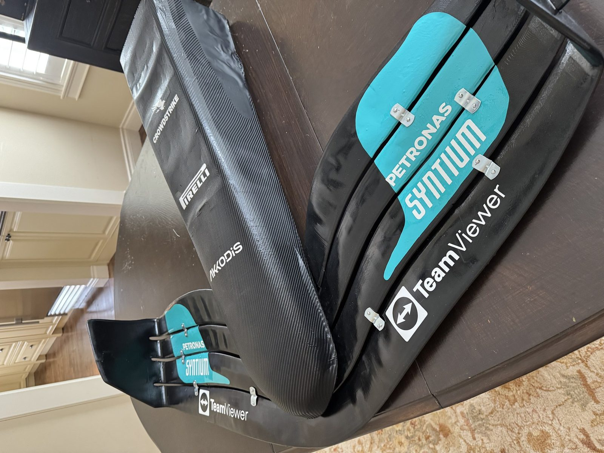

Ad Astra 3D: 3D Design and Entrepreneurship

ad-astra-3d/own-01.jpgA 3D design venture producing custom props, helmets, and functional replacement parts, where I led a small team across design, scanning, and fabrication.
| Scanning | LIDAR to point cloud to solid model |
|---|---|
| CAD | SolidWorks, Blender |
| Materials | PLA, TPU, carbon fiber, fiberglass |
| Record keeping | Internal obsolescence database |
Obsolescence
The most interesting part of the work is obsolescence, recreating parts that are no longer made. Exterior lighting components, plumbing fittings with no current equivalent, items whose manufacturers no longer exist.
It reverses the usual engineering workflow: you work backward from a physical object instead of forward from a drawing. LIDAR scanning captures the geometry, and SolidWorks and Blender turn point clouds into manufacturable models. The reproductions have to interface with undocumented legacy hardware, which makes obsolescence tracking and retrofit a real engineering problem rather than a printing one.
Materials
Material selection matters as much as geometry. Standard filament is fine for a display piece, but load-bearing and weather-exposed parts need reinforcement. Carbon fiber, fiberglass, and composite integration push durability well beyond unmodified printed material. Deciding where reinforcement is genuinely needed, versus where it is wasted cost and weight, is the main design judgement.
Build log
14 images ad-astra-3d/02.png
ad-astra-3d/02.png ad-astra-3d/03.png
ad-astra-3d/03.png ad-astra-3d/04.png
ad-astra-3d/04.png ad-astra-3d/05.png
ad-astra-3d/05.png ad-astra-3d/06.png
ad-astra-3d/06.png ad-astra-3d/07.png
ad-astra-3d/07.png ad-astra-3d/08.png
ad-astra-3d/08.png ad-astra-3d/09.png
ad-astra-3d/09.png ad-astra-3d/10.png
ad-astra-3d/10.png ad-astra-3d/11.png
ad-astra-3d/11.png ad-astra-3d/12.png
ad-astra-3d/12.png ad-astra-3d/13.png
ad-astra-3d/13.png ad-astra-3d/14.png
ad-astra-3d/14.png ad-astra-3d/15.png
ad-astra-3d/15.pngContact
Open to co-op and new-grad roles in robotics, aerospace, and advanced manufacturing.